disptools¶
Generate displacement fields with known volume changes¶


This library provides utilities to generate and manipulate displacement fields with known volume changes. It implements three search-based algorithms for the generation of deformation fields, along with a small collection of utility functions, and provides optional GPU acceleration through a CUDA implementation.
The three algorithms implemented are referred as:
- gradient: a gradient descent method (default).
- greedy: a greedy search method proposed in [1].
- matching: a volume matching method proposed in [2] and [3]. The implementation comes from the PREDICT atrophysim tool.
The library is built on top of SimpleITK, in order to provide a simple yet powerful set of functionalities for image analysis. Images stored as numpy arrays can be easily converted from and to SimpleITK and ITK image objects.
Documentation¶
The complete documentation for this package is available on https://martinopilia.com/disptools.
Quick example¶
import SimpleITK as sitk
import disptools.displacements as dsp
import disptools.drawing as drw
# Create an example Jacobian map
# A spherical ROI with a Jacobian of 1.1 (expansion)
jacobian = drw.create_sphere(10, 40, fg_val=1.1, bg_val=1.0)
# Create a binary mask for the ROI
mask = drw.create_sphere(10, 40) > 0
# Generate the displacement
displacement = dsp.displacement(jacobian, mask=mask)
# Check the correctness of the result within the ROI
error = jacobian - dsp.jacobian(displacement)
error = sitk.Mask(error, mask)
A 3D rendering of the resulting displacement field with ParaView, and a visualisation of the the error on the Jacobian within the ROI:
 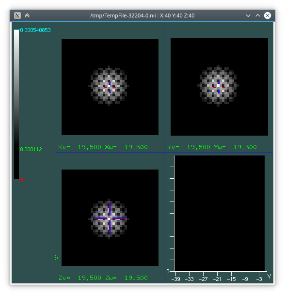
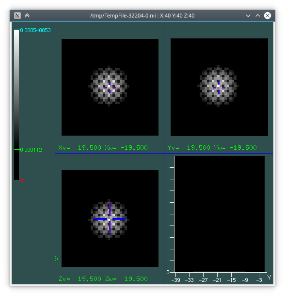
Architecture¶
The project is structured in three layers:
- a pure standard C99 library (whose headers are in src/headers), with no external dependencies, implementing the core algorithms for the generation of deformation fields. It is a standalone library that can be directly included in a C or C++ project. It is paired with an optional CUDA library, whose headers are in cuda/headers, that depends on src/headers and provides a GPGPU implementation of the key routines.
- a Python C extension package _disptools (whose source is in the file python_c_extension/_disptools.c), providing a bare Python wrapper to the aforementioned library, using the NumPy C API to pass arrays. This can be directly included in a Python project with no dependencies other than NumPy.
- a Python package (disptools), that wraps the _disptools package providing file IO (through SimpleITK) and implementing high-level features (such as the multi-resolution framework) and auxiliary utilities and functions.
- disptools.displacements: module providing the main functions for the generation and manipulation of displacement fields.
- disptools.drawing: collection of utilities to create test images.
- disptools.io: collection of utilities to read and write to file.
- disptools.measure: collection of utilities to measure some image features.
- disptools.simulatrophy: routines to interface with the Simul@atrophy tool.
- disptools.predict: routines to interface with the PREDICT tool.
Install¶
This package is available on PyPI both as source distribution and as a Windows pre-compiled binary wheel. You can install it with pip:
python3 -m pip install disptools
Build from source¶
Requirements¶
The library is a cross-platform Python 3.5+ package, with a compiled C extension. The Python dependencies are:
Build dependencies are a standard C compiler (tested with gcc 8.2 on Linux, mingw-w64 7.2 and MSVC 19 on Windows 10), CMake, the numpy and the setuptools packages. scikit-build may be required to build the other Python dependencies.
Some optional dependencies are required only for a limited set of features, and the package should build and run without them:
- itk (pypi package): for disptools.drawing.sitk_to_itk
- vtk (pypi package): for disptools.io.write_vtk_points
- ply (pypi package): for disptools.io.read_elastix_parameters
- scikit-image (pypi package): for disptools.drawing.extract_slice, and to run the unit tests
Build options¶
The following build flags are recognised by setup.py:
- --opt: enable non-portable optimisations.
- --debug: disable optimisations, compile with debug symbols.
- --cuda: enable CUDA support.
Additional flags starting with -D are also accepted and passed directly to CMake.
Windows (Visual Studio) and Linux¶
Install the dependencies with your favourite package manager. For example, with pip:
python3 -m pip install scikit-build numpy scipy SimpleITK
The package provides a setuptools based install script. To install the library, run from the project root folder
python3 setup.py install
which should build the C extension and install the Python package.
Windows (MinGW)¶
First, be sure that mingw, CMake and Python are installed and their executables are in your PATH.
Ensure that gcc is working correctly:
> gcc --version gcc (x86_64-posix-seh-rev1, Built by MinGW-W64 project) 7.2.0 Copyright (C) 2017 Free Software Foundation, Inc. This is free software; see the source for copying conditions. There is NO warranty; not even for MERCHANTABILITY or FITNESS FOR A PARTICULAR PURPOSE.
Ensure that distutils correctly recognises your version of Visual Studio (even when using mingw). Open the file C:\Users\yourname\AppData\Local\Programs\Python\Python3x\Lib\distutils\cygwinccompiler.py (the exact location may vary according to your setup) and check that your version of Visual Studio is present in the function get_msvcr(); if not, adjust it according to the following:
def get_msvcr(): """Include the appropriate MSVC runtime library if Python was built with MSVC 7.0 or later. """ msc_pos = sys.version.find('MSC v.') if msc_pos != -1: msc_ver = sys.version[msc_pos+6:msc_pos+10] if msc_ver == '1300': # MSVC 7.0 return ['msvcr70'] elif msc_ver == '1310': # MSVC 7.1 return ['msvcr71'] elif msc_ver == '1400': # VS2005 / MSVC 8.0 return ['msvcr80'] elif msc_ver == '1500': # VS2008 / MSVC 9.0 return ['msvcr90'] elif msc_ver == '1600': # VS2010 / MSVC 10.0 return ['msvcr100'] elif msc_ver == '1700': # Visual Studio 2012 / Visual C++ 11.0 return ['msvcr110'] elif msc_ver == '1800': # Visual Studio 2013 / Visual C++ 12.0 return ['msvcr120'] elif msc_ver == '1900': # Visual Studio 2015 / Visual C++ 14.0 # "msvcr140.dll no longer exists" http://blogs.msdn.com/b/vcblog/archive/2014/06/03/visual-studio-14-ctp.aspx return ['vcruntime140'] else: raise ValueError("Unknown MS Compiler version %s " % msc_ver)
Ensure that the library vcruntime140.dll is present in your library path. Otherwise, download it and place it in C:\Users\yourname\AppData\Local\Programs\Python\Python3x\libs (the exact path may vary according to your setup).
Install the dependencies:
> python -m pip install scikit-build numpy scipy SimpleITK
Clone the sources of this package with git, or download and extract them as a zip archive. Move to the root folder of the sources (C:\Users\yourname\disptools in this example), specify the right compiler, and launch the setup script to build and install the package.
> cd C:\Users\yourname\disptools > python setup.py setopt --command=build --option=compiler --set-value=mingw32 > python setup.py install
References¶
- [1] van Eede, M. C., Scholz, J., Chakravarty, M. M., Henkelman, R. M., and Lerch, J. P. Mapping registration sensitivity in MR mouse brain images. Neuroimage 82 (2013), 226–236.
- [2] Karaçali, B., and Davatzikos, C. Estimating topology preserving and smooth displacement fields. IEEE Transactions on Medical Imaging 23, 7 (2004), 868–880.
- [3] Karaçali, B., and Davatzikos, C. Simulation of tissue atrophy using a topology preserving transformation model. IEEE transactions on medical imaging 25, 5 (2006), 649–652.
License¶
The software is distributed under the MIT license.
disptools package¶
Submodules¶
disptools.displacements module¶
-
disptools.displacements.average_jacobian(input_filenames_pattern, epsilon=1e-05)[source]¶ Compute the average of a set of Jacobians.
This function reads a collection of Jacobian maps from files (any format readable by SimpleITK) and computes their average Jacobian (defined as the geometric mean computed under logarithm). It accepts a string argument containing a glob pattern to the input files, and a second optional argument setting a minimum threshold for the Jacobian.
For instance, assuming there is a folder
/home/user/my_jacobianscontaining a set of Jacobian maps invtkformat, the average can be computed with>>> average_jacobian = disptools.displacements.average_jacobian('/home/user/my_jacobians/*.vtk')
The average Jacobian is defined as the geometric mean computed under logarithm.
Parameters: - input_filenames_pattern (str) – A glob pattern for the displacement files in a format readable by SimpleITK.
- epsilon (float) – A lower threshold for the Jacobian, all values below epsilon will be replaced with epsilon.
Returns: The geometric mean of the input Jacobian maps.
Return type: sitk.Image
-
disptools.displacements.average_jacobian_from_displacements(input_filenames_pattern, epsilon=1e-05)[source]¶ Compute the average Jacobian of a set of displacement fields.
This function reads a collection of displacement fields from files (
rvfor any other format readable by SimpleITK) and computes the average Jacobian of the deformation associated to them (defined as the geometric mean computed under logarithm). It accepts a string argument containing a glob pattern to the input displacement files, and a second optional argument setting a minimum threshold for the Jacobian.For instance, assuming there is a folder
/home/user/my_displacementscontaining a set of displacement fields invtkformat, the average Jacobian can be computed with>>> average_jacobian = disptools.displacements.average_jacobian_from_displacements('/home/user/my_jacobians/*.vtk')
The average Jacobian is defined as the geometric mean computed under logarithm.
Parameters: - input_filenames_pattern (str) – A glob pattern for the displacement files in RVF or another format readable by SimpleITK.
- epsilon (float) – Minimum threshold for the Jacobian, all values below epsilon will be replaced with epsilon.
Returns: The average Jacobian of the given displacements.
Return type: sitk.Image
-
disptools.displacements.compose_displacements(*fields)[source]¶ Compose multiple displacement fields.
Compute the composition pairwise and iteratively. For a couple of displacements
 and
and  associated to the transforms
associated to the transforms  and
and  , the
composition
, the
composition
is obtained by resampling
with and then
summing.Parameters: fields (sitk.Image) – Variadic list of displacement fields. Returns: The composition of the input displacement fields. Return type: sitk.Image
-
disptools.displacements.decompose_displacements(field1, field2)[source]¶ Decompose two displacement fields.
Given two displacement fields
and
associated to the transforms and ,
find a third displacement 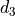 associated to the
transform 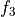, such that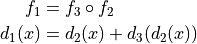
Parameters: - field1 (sitk.Image) – Total displacement.
- field2 (sitk.Image) – Component to be decomposed from the total displacement.
Returns: A vector image representing a displacement field such that its composition with the second argument gives the first argument.
Return type: sitk.Image
-
disptools.displacements.deformation_to_displacement(deformation)[source]¶ Convert a deformation field to a displacement field.
A deformation field
 is given by the sum of the identity
transform and a displacement field
is given by the sum of the identity
transform and a displacement field  :
: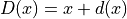
Parameters: deformation – Input deformation field. Returns: Displacement field associated to the deformation. Return type: sitk.Image
-
disptools.displacements.displacement(jacobian, *, levels=1, pad=0, redistribute=False, mask=None, initial_guess=None, epsilon=0.000999, tolerance=0.2, it_max=50000, alpha=1.2, beta=0.5, gamma=0.1, delta=0.001, zeta=10.0, theta=1e-06, iota=1e-09, strict=False, eta=0.1, eta_max=0.4, algorithm='gradient', gpu_id=-1)[source]¶ Generate a displacement field that realises a given Jacobian.
Given a 3D scalar image encoding a Jacobian map, compute a 3D vector image encoding a vector field whose Jacobian map matches the input up to a certain tolerance. The three algorithms provided are:
gradient: a gradient descent method (default).greedy: a greedy search method based on the method proposed in [1].matching: a volume matching routine based on gradient descent, published in [2] and [3]. The implementation comes from the atrophysim tool.
The initial value of the step length in the gradient descent is given by the parameter
eta. Thegradientandmatchingalgorithms use an Armijo condition to control the step length, in the form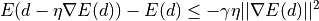
where
is the displacement,  the loss function,
the loss function,
 the current step length, and
the current step length, and  a
parameter of the condition. At each iteration the step length is increased
multiplying it by
a
parameter of the condition. At each iteration the step length is increased
multiplying it by alpha, and if the Armijo condition is not met after the update,etais decreased multiplying it bybetauntil the truth of the inequality in the Armijo condition is restored. A maximum value foretacan be set through the parametereta_max.The
gradientandmatchingalgorithms have a regularisation term that penalises values of the Jacobian below a certain threshold, given bydelta. The importance of the regularisation term is controlled by the parameterzeta(set to0to have no regularisation).Termination is controlled by a condition on the improvement on the result and one on the step length. If the percentual improvement of the cost drops below the value given by
theta, the algorithm terminates. Termination happens also if the step length becomes smaller thaniota.Note
The displacement is generally not accurate on image boundary voxels.
Note
The C verbose output is written to stdout. If you want to capture it from within Python, the wurlitzer package might be helpful.
Warning
This function calls a C routine which cannot be interrupted from the REPL.
References
[1] van Eede, M. C., Scholz, J., Chakravarty, M. M., Henkelman, R. M., and Lerch, J. P. “Mapping registration sensitivity in MR mouse brain images.” Neuroimage 82 (2013), 226–236. [2] Karaçali, B., and Davatzikos, C. “Estimating topology preserving and smooth displacement fields.” IEEE Transactions on Medical Imaging 23, 7 (2004), 868–880. [3] Karaçali, B., and Davatzikos, C. “Simulation of tissue atrophy using a topology preserving transformation model.” IEEE transactions on medical imaging 25, 5 (2006), 649–652. Parameters: - jacobian (sitk.Image) – Input Jacobian.
- levels (int) – Number of levels in the multi-resolution pyramid; the size of the image along each direction is halven at each level.
- pad (int) – Thickness of the zero-padding around the volume (0 for the mask, 1.0 for the Jacobian) to be used during the computation. The padding is removed before returning the result.
- redistribute (bool) – Redistribute the volume change inside the mask to the background.
- mask (sitk.Image) – Binary mask for the region of interest.
- initial_guess (sitk.Image) – Initial estimation of the solution. The default is a null displacement field.
- epsilon (float) – A floating point value, representing the tolerance per voxel on the Jacobian of the resulting field.
- tolerance (float) – Tolerance on Jacobian outside the mask.
- it_max (Union[int, List[int]]) – Maximum number of iterations allowed. If it is a list, its length must match the number of levels in the multi-resolution pyramid, and each value is used for a single level, with the first element of the list representing the level with lowest resolution. If it is a scalar, then the same number of iterations is used for all pyramid levels.
- alpha (float) – Coefficient that controls the increase of the step length.
- beta (float) – Coefficient that controls the decrease of the step length.
- gamma (float) – Armijo-Goldstein parameter.
- delta (float) – Lower threshold for Jacobian regularisation.
- zeta (float) – Weight for the regularisation term.
- theta (float) – Terminate if the percentage improvement of the cost per iteration drops below this value.
- iota (float) – Terminate if the step length drops below this value.
- strict (bool) – If True, reject iterations that not decrease the maximum voxel error.
- eta (float) – Initial step length.
- eta_max (float) – Maximum step length allowed.
- algorithm (str) – Algorithm to generate the field, one of greedy, gradient, or matching.
- gpu_id (int) – Id of the CUDA device used to run the GPU implementation. If equal to -1, the CPU implementation is used instead. Requires a build of disptools with CUDA support enabled.
Returns: A displacement field whose Jacobian matches the input.
Return type: sitk.Image
-
disptools.displacements.field_zero_padding(field, size_x=(1, 1), size_y=(1, 1), size_z=(1, 1))[source]¶ Add a zero padding to a vector field.
Set the zero padding manually, since sitk.ConstantPad() does not support vector images.
Parameters: - field (sitk.Image) – Input vector field.
- size_x ((int, int)) – Amount of padding at the beginning and end of x direction.
- size_y ((int, int)) – Amount of padding at the beginning and end of y direction.
- size_z ((int, int)) – Amount of padding at the beginning and end of z direction.
Returns: A padded vector field.
Return type: sitk.Image
-
disptools.displacements.inverse_consistency_error(forward, backward, mask=None)[source]¶ Compute the inverse consistency error (ICE).
Parameters: - forward (sitk.Image) – A displacement from the registration (maps from reference space to moving image space).
- backward (sitk.Image) – A displacement from the inverse registration (maps from moving image space to reference space)
- mask (sitk.Image) – ROI in the reference image space
Return type: Tuple[Image,float,float]Returns: - sitk.Image – Map of the average inverse consistency error magnitude.
- float – Average inverse consistency error.
- float – Maximum inverse consistency error.
-
disptools.displacements.invert_displacement_padded(field)[source]¶ Invert a displacement field using one voxel of padding in the computation.
Parameters: field (sitk.Image) – Input displacement field. Returns: The inverse of the displacement, computed under padding. Return type: sitk.Image
-
disptools.displacements.jacobian(field)[source]¶ Compute the Jacobian map of a vector field.
Parameters: field (sitk.Image) – Input vector field. Returns: The Jacobian of the given vector field. Return type: sitk.Image
-
disptools.displacements.jacobian_to_volume_change(jacobian, epsilon=1e-05)[source]¶ Convert a Jacobian map to a volume change map.
A volume change map is defined as
 =
\begin{cases}
1 - \frac{1}{J[f](x)} \quad &J[f](x) \in (0,1) \\
J[f](x) - 1 \quad &J[f](x) \ge 1
\end{cases}](images/math/26cc47f0fe2fa709340c278a2372283f6211c0c5.png)
Parameters: - jacobian (sitk.Image) – Input Jacobian map.
- epsilon (float) – Lower threshold for the Jacobian; any value below epsilon will be replaced with epsilon.
Returns: Volume change map associated to the input Jacobian.
Return type: sitk.Image
-
disptools.displacements.redistribute_volume_change(image, mask)[source]¶ Redistribute the volume change over the image.
Redistribute the change of volume within the body on the background, and enforce the total volume change over the entire image to be zero.
Parameters: - image (sitk.Image) – Input Jacobian.
- mask (sitk.Image) – Binary mask of the body volume.
Returns: A new Jacobian map with redistributed volume changes.
Return type: sitk.Image
-
disptools.displacements.regularise(jacobian, epsilon=1e-05)[source]¶ Regularise the Jacobian, removing singularities.
Given a 3D scalar image, replace all the entries that are smaller than epsilon with epsilon.
Parameters: - jacobian (sitk.Image) – Input Jacobian map
- epsilon (float) – Lower threshold for the Jacobian.
Returns: Thresholded Jacobian.
Return type: sitk.Image
-
disptools.displacements.volume_change_to_jacobian(volume_change)[source]¶ Convert a volume change map to a Jacobian map.
A volume change map is defined as
Parameters: volume_change (sitk.Image) – Input volume change map. Returns: A Jacobian map associated to the input volume changes. Return type: sitk.Image
-
disptools.displacements.warp_points_by_displacement(points, displacement)[source]¶ Warp a set of Elastix points by a displacement field.
Parameters: - points (np.ndarray) – A 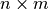 array representing
 points
with
points
with  components.
components. - displacement (sitk.Image) – Displacement field.
Returns: An array representing the warped points.
Return type: np.ndarray
- points (np.ndarray) – A 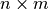 array representing
disptools.drawing module¶
-
disptools.drawing.create_sphere(radius, size=None, centre=None, fg_val=1.0, bg_val=0.0, norm=2, sigma=0.0, neighbourhood=3, value_function=None, points_file='')[source]¶ Create a volume image containing a spherical object.
Parameters: - radius (float) – Radius of the ball.
- size (Union[int, Tuple[int, int, int]]) – Size of the volume image.
- centre (Tuple[float, float, float]) – Centre of the sphere.
- fg_val (float) – Value in the foreground, i.e. inside the ball; for variable values, see value_function.
- bg_val (float) – Value in the background, i.e. outside the ball.
- norm (Union[int, str]) – Minkovski norm used to define the metric (‘inf’ or ‘max’ to use the Chebyshev norm).
- sigma (float) – Sigma parameter for a Gaussian smoothing of the result.
- neighbourhood (int) – Neighbourhood size for a Gaussian smoothing of the result.
- value_function (Callable[[float, float, float], float]) – Function that associate an intensity to each point within the ball; it takes three arguments (normalised spherical coordinates of the point) and returns a scalar intensity; the input is in vector form, and operations within this function should be vectorised (e.g. using numpy functions).
- points_file (str) – Name of the file used to store a set of reference points associated to the ball (empty string means to not store the reference points).
Returns: A volume image containing a ball.
Return type: sitk.Image
-
disptools.drawing.extract_slice(image, index=None, axis=2, rescale=False, colormap=3, hsv_interpolation=False, window=None)[source]¶ Extract a slice.
This function takes care of resampling the image on a uniform grid with unit spacing, that can be exported to format that do not support anisotropic voxel spacing.
Parameters: - image (sitk.Image) – Input image.
- index (int) – Integer index of the slice to extract.
- axis (int) – Integer index of the axis orthogonal to the slice plane.
- rescale (bool) – If True, do min-max rescaling of the image intensity to [0,255].
- colormap (Union[int, np.ndarray]) – One of the colormaps defined in sitk.ScalarToRGBColormapImageFilter, or an $n times 4$ array of node colours for a custom colour map, where the first column gives an intensity value and the other three the RGB components in the range $[0,1]$ for the node colours to be interpolated. If None, the result will be a grayscale image; if not None, map the intensity values to RGB colours through the selected colormap.
- hsv_interpolation (bool) – If True, perform colour interpolation in HSV space when using a custom colour map.
- window ((float, float)) – Tuple composed by a couple of minimum and maximum values for intensity windowing.
Returns: A sitk.sitkUInt8 image containing the desired slice.
Return type: sitk.Image
-
disptools.drawing.float_dilate(image, dilate)[source]¶ Dilate a float valued image.
Parameters: - image (sitk.Image) – Image to be dilated.
- dilate (int) – Radius of the structuring element.
Returns: Dilated image.
Return type: sitk.Image
-
disptools.drawing.mask(image, mask, jacobian=False)[source]¶ Mask an image (special meaning for Jacobian maps).
Parameters: - image (sitk.Image) – Input image to be masked (possibly float).
- mask (sitk.Image) – Mask (possibly float).
- jacobian (bool) – If true, the background after masking is set to one, if false to zero.
Returns: The masked image.
Return type: sitk.Image
-
disptools.drawing.polar_conversion(norm, centre, radius, x, y, z)[source]¶ Convert Cartesian to normalised spherical coordinates.
Parameters: - norm (Union[int, str]) – Minkovski norm (‘max’ or ‘inf’ for the Chebyshev norm).
- centre (Tuple[float, float, float]) – Coordinates of the centre.
- radius (float) – Radius of the ball.
- x (float) – Cartesian coordinate.
- y (float) – Cartesian coordinate.
- z (float) – Cartesian coordinate.
Returns: A tuple (rho, theta, phi) of spherical coordinates with rho normalised w.r.t. the radius of the sphere.
Return type: Tuple[int, int, int]
-
disptools.drawing.scale_image(image, new_size, interpolator=2)[source]¶ Scale an image in a grid of given size.
Parameters: - image (sitk.Image) – An input image.
- new_size (Tuple[int, …]) – A tuple of integers expressing the new size.
- interpolator (int) – A SimpleITK interpolator enum value.
Returns: Resized image.
Return type: sitk.Image
disptools.io module¶
-
disptools.io.make_unique_directory(path)[source]¶ Create a unique directory.
If a directory with the given name already exists, a suffix in the form _x with x integer will be added at the end of its name.
Parameters: path (str) – Relative or absolute path for the new directory. Returns: A string containing the path of the new directory. Return type: str
-
disptools.io.read_elastix_parameters(filename)[source]¶ Read an Elastix parameter file.
Read an Elastix parameter file, returning a dictionary mapping each parameter name to a list of values. Booleans are converted to Python bool`s, same for `int and float values. Strings do not need to be quoted. Comments are discarded.
Warning
This function will not work if Python is allowed to discard docstrings (e.g. due to the option -OO).
Parameters: filename (str) – Name of the parameter file to be read. Returns: Dictionary of parameters. Return type: dict
-
disptools.io.read_elastix_points(filename)[source]¶ Read a set of points from a file in Elastix format.
The points are returned as a two-dimensional numpy array, with a row for each point and three columns, one per coordinate.
Parameters: filename (str) – Output file. Returns: A n × m array containing n points with m components. Return type: np.ndarray
-
disptools.io.read_rvf(filename)[source]¶ Read an RVF file.
Read image data from an RVF file.
Parameters: filename (str) – Filename for the input vector field. Returns: result – Vector field. Return type: sitk.Image
-
disptools.io.write_elastix_parameters(parameters, filename)[source]¶ Write Elastix parameters to file.
Write an Elastix parameter file. Parameters are passed as a dictionary mapping each parameter name to a list of values. Python `bool`s, `int`s, and `float`s are converted automatically.
Parameters: - parameters (dict) – Dictionary of parameters.
- filename (str) – Name of the parameter file to be read.
Return type: None
-
disptools.io.write_elastix_points(points, filename, point_format='point')[source]¶ Write a set of points to a file in Elastix format.
The points are passed as a two-dimensional numpy array, with a row for each point and three columns, one per coordinate.
Parameters: - points (np.ndarray) – A n × m array containing n points with m components.
- filename (str) – Output file.
- point_format (str) – One of ‘point’ (default) or ‘index’.
Return type: None
-
disptools.io.write_vtk_points(points, filename)[source]¶ Write a set of points to a VTK PolyData file.
The points are given as a numpy bidimensional array, with a row for each point, and three columns, one per component.
Parameters: - points (np.ndarray) – A n × m array containing n points with m components.
- filename (str) – Output file.
Return type: None
disptools.measure module¶
-
disptools.measure.average_jacobian_error(jacobian, mask=None)[source]¶ Compute the average error between the input Jacobian and a constant unit Jacobian map.
The average Jacobian error is defined as 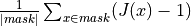
Parameters: - jacobian (sitk.Image) – Input Jacobian map.
- mask (sitk.Image) – Optional binary mask, to compute the error only on a ROI.
Returns: The average Jacobian error.
Return type: float
-
disptools.measure.centre_of_mass(image)[source]¶ Compute the centre of mass of the image.
A real-valued image represents the distribution of mass, and its centre of mass is defined as
 .
.Parameters: image (sitk.Image) – Input image. Returns: World coordinates (x, y, z) of the centre of mass. Return type: np.ndarray
-
disptools.measure.cubicity(image)[source]¶ Measure the cubicity of an object.
The cubicity is defined [4] as the ratio between the volume of the object and the volume of its bounding cube. A cube has cubicity equal to 1, a sphere has cubicity pi/6, and in general non-cubic objects have cubicity strictly lesser than 1.
Here the bounding cube is estimated as the cube whose side is equal to the longest side of the oriented bounding box of the object.
References
[4] O’Flannery, LJ and O’Mahony, MM, “Precise shape grading of coarse aggregate”. Magazine of Concrete Research 51.5 (1999), pp. 319-324. Parameters: image (sitk.Image) – Input binary (sitkUInt8) image. Returns: A floating point value of cubicity in the interval [0, 1]. Return type: float
-
disptools.measure.entropy(image, mask=None, bins=256, sigma=0.0, window=None)[source]¶ Compute the entropy of an image.
The information entropy of a random variables 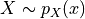 is defined as
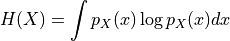
Entropy is estimated by approximating the probability density with an intensity histogram.
Parameters: - image (sitk.Image) – Input image.
- mask (sitk.Image) – Binary image masking a region of interest.
- bins (int) – Number of bins for the intensity histogram.
- sigma (float) – Standard deviation for Gaussian smoothing of the histogram histogram. If zero, no smoothing is used.
- window (Tuple[float, float]) – Intensity window. If not None, then values outside the provided window are considered outliers and excluded from the computation.
Returns: An estimation of the information entropy of the image.
Return type: float
-
disptools.measure.f(image1, image2)[source]¶ Compute the fitting index of an input object.
The F measure is defined as the harmonic mean of precision and recall:
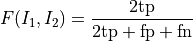
It is equivalent to the Sørensen-Dice coefficient, defined as two times the measure of the intersection over the sum of the measures of the two inputs:
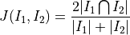
Parameters: - image1 (sitk.Image) – First input binary image.
- image2 (sitk.Image) – First input binary image.
Returns: Value of the F measure.
Return type: float
-
disptools.measure.fitting_index(image, norm=2.0, centre=None, radius=None, padding=True)[source]¶ Compute the fitting index of an input object.
The fitting index of order p is defined as the Jaccard coefficient computed between the input object and a p-ball centred in the object’s centre of mass.
Parameters: - image (sitk.Image) – Input binary image of the object.
- norm (Union[int,str]) – Order of the Minkowski norm (‘inf’ or ‘max’ to use the Chebyshev norm).
- centre (Tuple[float, float, float]) – Forces the p-ball to be centred in a specific point.
- radius (float) – Force the radius of the p-ball.
- padding (bool) – If True, add enough padding to be sure that the ball will entirely fit within the volume.
Returns: Value of the fitting index.
Return type: float
-
disptools.measure.isovolumteric_radius(image, norm)[source]¶ Compute the radius of a ball isovolumetric to the input object
Parameters: - image (sitk.Image) – Input binary image.
- norm (Union[int,str]) – Order of the Minkowski norm (‘inf’ or ‘max’ to use the Chebyshev norm).
Returns: Value of the isovolumetric radius.
Return type: float
-
disptools.measure.jaccard(image1, image2)[source]¶ Compute the fitting index of an input object.
The Jaccard coefficient is defined as the measure of the intersection over the measure of the union:
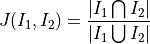
Parameters: - image1 (sitk.Image) – First input binary image.
- image2 (sitk.Image) – First input binary image.
Returns: Value of the Jaccard coefficient.
Return type: float
-
disptools.measure.minkowski_compactness(image, norm=1.0)[source]¶ Compute the Minkovski compactness of a binary image.
Minkowski compactness of an object is defined as the ratio between the volume of the object and the volume of a p-ball centred on the object’s centre of mass, maximised agaist spatial rotations of the ball.
Parameters: - image (sitk.Image) – Input binary image.
- norm (Union[int,str]) – Order of the Minkowski norm (‘inf’ or ‘max’ to use the Chebyshev norm).
Returns: Value of the Minkowski norm.
Return type: float
-
disptools.measure.mutual_information(image1, image2, mask, bins=256, sigma=0.0, window=None, normalised=False)[source]¶ Compute the mutual information of two images.
The mutual information of two random variables and 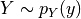 with joint probability distribution 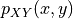 is defined as
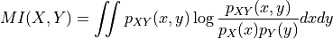
Mutual information is estimated by approximating the joint probability density with a joint histogram for the intensity of the two images.
Parameters: image1 (sitk.Image) – Input image. Must have the same size of image2.
image2 (sitk.Image) – Input image. Must have the same size of image1.
mask (sitk.Image) – Binary image masking a region of interest.
bins (Union[int, List[int, int], np.ndarray, List[np.ndarray, np.ndarray]]) –
- Number of bins for the marginal intensity histograms:
- If int, use the same number of bins for both images.
- If List[int, int], use two different bis sizes for the two images.
- If np.ndarray, specity the same bin edges for the two images.
- If List[np.ndarray, np.ndarray], specity different bin edges for the two images.
sigma (float) – Standard deviation for Gaussian smoothing of the joint histogram. If zero, no smoothing is used.
window (Tuple[Tuple[float, float], Tuple[float, float]]) – Intensity window for the two images, in the form [[min1, max1], [min2, max2]]. If not None, then values outside the provided window are considered outliers and excluded from the computation.
normalised (bool) – If True, compute the normalised mutual information as 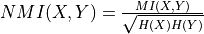.
Returns: An estimation of the mutual information for the two images.
Return type: float
-
disptools.measure.reject_outliers(data, k=2.5, absolute=True)[source]¶ Reject outliers from an array, based on the median deviation (MD).
Reject as outliers all values whose deviation from the median is higher than 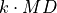.
Parameters: - data (np.ndarray) – Array of values.
- k (float) – Number of MDs for outlier rejection.
- absolute (bool) – If True, use absolute deviations.
Returns: An array with the outliers removed.
Return type: np.ndarray
-
disptools.measure.sphericity(image)[source]¶ Measure the sphericity of a object.
The sphericity is defined [5] [6] as the ratio between the surface of a sphere with the same volume of the object and the surface of the object itself.
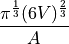
A sphere has sphericity equal to 1, non-spherical objects have sphericity strictly lesser than 1.
References
[5] Wadell, Hakon. “Volume, shape, and roundness of quartz particles.” The Journal of Geology 43.3 (1935): 250-280. [6] Lehmann, Gaëthan. “Label object representation and manipulation with ITK” Insight Journal, July-December 2007 Parameters: image (sitk.Image) – Input binary (sitkUInt8) image. Returns: A floating point value of sphericity in the interval [0, 1]. Return type: float
-
disptools.measure.volume_change(jacobian, mask=None, average=False, squared=False)[source]¶ Compute the volume change associated to a Jacobian map.
The total volume change associated to an invertible transform
 over a ROI 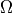 is defined as
over a ROI 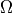 is defined as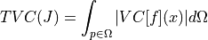
while the average absolute volume change is defined as
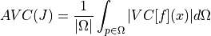
where the volume change is defined as
with 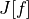 representing the Jacobian of
.Parameters: - jacobian (sitk.Image) – Jacobian map of the transform.
- mask (sitk.Image) – Binary image masking a region of interest.
- average (bool) – If
truereturn the average and standard deviation, otherwise return the total. - squared (bool) – If
truereturn the total or average of the squared volume change.
Returns: The total volume change.
Return type: float
disptools.predict module¶
-
disptools.predict.create_target_volume(image, atrophy_rate)[source]¶ Create a target volume map for the PREDICT tool.
Given an input segmentation map, create mask target volume map for the PREDICT tool, with the given atrophy rate. The volume change in 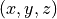 is defined over a cubic pach formed by the voxel , its three successors along the axis and their respective successors to close the cube. Hence, if the input mask has size 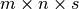, the volume map has size 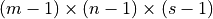.
Note
The output must be in np.float32, since the PREDICT tool uses the C float type as hard-coded type.
Parameters: - image (sitk.Image) – Input segmentation map.
- atrophy_rate (float) – Target atropy rate for the segmented ROI.
Returns: A SimpleITK image object with the target volume map.
Return type: sitk.Image
-
disptools.predict.read_deformation(filename, size)[source]¶ Read a deformation field from a file in the PREDICT format
The deformation field is stored as binary uncompressed 32-float data.
PREDICT uses a different convention for the coordinates (with rows along the
 axis, columns along the
axis, columns along the  axis, and slices
along the
axis, and slices
along the  axis), so a permutation of the components in the
result is required. The identity is subtracted in order to convert the
deformation to a displacement field.
axis), so a permutation of the components in the
result is required. The identity is subtracted in order to convert the
deformation to a displacement field.Note
The size of the volume is not stored within PREDICT files, so it needs to be known and passed as an argument.
Parameters: - filename (str) – Input file.
- size ((int, int, int)) – Size of the volume (x,y,z).
Returns: A SimpleITK image object containing the corresponding displacement field.
Return type: sitk.Image
-
disptools.predict.read_img(filename, size)[source]¶ Read an image from file in the PREDICT format.
PREDICT uses a different convention for the coordinates (with rows along the
axis, columns along the axis, and slices
along the axis), so a permutation of the components in the
result is required.Note
The size of the volume is not stored within PREDICT files, so it needs to be known and passed as an argument.
Parameters: - filename (str) – Input file.
- size ((int, int, int)) – Size of the volume (x,y,z).
Returns: a SimpleITK image object containing the corresponding image
Return type: sitk.Image
-
disptools.predict.write_img(image, filename)[source]¶ Write an image to file in the PREDICT format.
PREDICT uses a different convention for the coordinates (with rows along the
axis, columns along the axis, and slices
along the axis), so a permutation of the components in the
result is required.Note
The size of the volume will not be stored within the file.
Parameters: - filename (str) – Input file.
- size ((int, int, int)) – Size of the volume (x,y,z).
Returns: A SimpleITK image object containing the corresponding image.
Return type: sitk.Image
disptools.simulatrophy module¶
-
disptools.simulatrophy.jacobian_to_atrophy_map(image)[source]¶ Convert a Jacobian map to a atrophy map.
The atrophy rate
 is defined as the pointwise percentage of
volume loss, so
is defined as the pointwise percentage of
volume loss, so  (where
(where  is the Jacobian).
is the Jacobian).Parameters: image (sitk.Image) – Input image. Returns: Corresponding atrophy map. Return type: sitk.Image
-
disptools.simulatrophy.mask_to_simulatrophy_mask(image, radius=None, kernel=1)[source]¶ Convert a binary mask to a Simul@atrophy mask.
- The mask used by Simul@atrophy has five labels:
- 0: skull
- 1: cerebro-spinal fluid (CSF)
- 2: gray matter
- 3: white matter
- 4: falx cerebri
This function takes as input a binary mask, and returns another mask in the Simul@atrophy format, where the ROI of the original mask is mapped to white matter, a surrounding region of CSF is created around it, and the remaining is set to skull.
Parameters: - image (sitk.Image) – Input binary mask.
- radius (int) – Radius for the dilation, determines the amount of CSF surrounding the ROI. If None, all the volume outside the ROI is set to CSF.
- kernel (int) – Kernel used for the dilation, among the values in itk::simple::KernelEnum.
Returns: A Simul@atrophy mask constructed from the input mask.
Return type: sitk.Image
-
disptools.simulatrophy.run(jacobian, mask, scale=None, sigma=2.0, lame=(1.0, 1.0, 1.0, 1.0), origin=None, size=None, executable=None)[source]¶ Wrapper around Simul@atrophy.
Use Simul@atrophy [7] to generate a displacement that realises the volume changes prescribed by the input Jacobian map. Optionally, the function can operate on a downsampled version of the image.
Note
Requires a working installation of Simul@atrophy.
References
[7] Khanal, Bishesh, Nicholas Ayache, and Xavier Pennec. “Simulating Longitudinal Brain MRIs with Known Volume Changes and Realistic Variations in Image Intensity.” Frontiers in neuroscience 11 (2017): 132. Parameters: jacobian (sitk.Image) – Jacobian map.
mask (sitk.Image) – Binary mask marking the ROI whose Jacobian shall be matched.
scale (Tuple[float, float, float]) – If not
None, operate on an image downsampled by dividing each size component by the given factors.sigma (float) – Amount of smoothing prior to resampling. Only relevant when
scaleis notNone.lame (Tuple[float, float, float, float]) –
- Lamé parameters, in the following order:
 within the ROI
within the ROI- outside the ROI
 within the ROI
within the ROI- outside the ROI
origin (Tuple[int, int, int]) – If not None then only a region of the image is processed, defined by origin and size. Requires to specify
size.size (Tuple[int, int, int]) – If not None then only a region of the image is processed, defined by origin and size. Requires to specify
origin.executable (str) – Path to the Simul@atrophy executable. If None, the executable is searched within the system path.
Returns: A displacement field realising the volume changes of the given Jacobian map.
Return type: sitk.Image